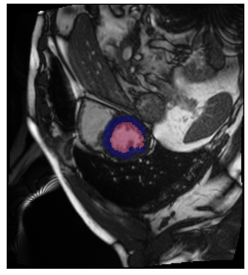
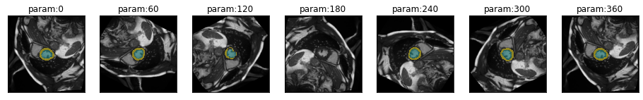
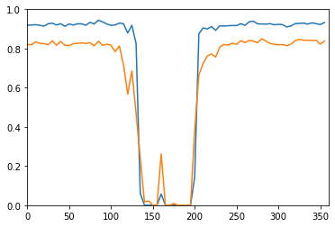

from misas.core import *
from misas.core import default_cmap, default_cmap_true_mask
from misas.fastai_model import Fastai2_model
from PIL import Image, ImageEnhance, ImageOps
from functools import partial
from tqdm.notebook import tqdm
import matplotlib.pyplot as plt
import numpy as npModel Interpretation through Sensitivity Analysis for Segmentation
Interpret and explain your segmetation models through analysing their sensitivity to defined alterations of the input

Input alterations currently include: - rotation - cropping - brightness - contrast - zooming - flipping (dihedral) - resizing - MR artifacts (via torchio)
Install
pip install misas
Cite
If you use misas in your research, please cite: > Ankenbrand, M. J., Shainberg, L., Hock, M., Lohr, D., & Schreiber, L. M. Sensitivity analysis for interpretation of machine learning based segmentation models in cardiac MRI. BMC Medical Imaging, 21(27). https://doi.org/10.1186/s12880-021-00551-1
If you use the simulated MR artifacts, please also cite torchio: > F. Pérez-García, R. Sparks, and S. Ourselin. TorchIO: a Python library for efficient loading, preprocessing, augmentation and patch-based sampling of medical images in deep learning. Computer Methods and Programs in Biomedicine (June 2021), p. 106236. ISSN: 0169-2607. https://doi.org/10.1016/j.cmpb.2021.106236
How to use
Example with kaggle data
def label_func(x):
pass
def acc_seg(input, target):
pass
def diceComb(input, targs):
pass
def diceLV(input, targs):
pass
def diceMY(input, targs):
passimg = lambda: Image.open("example/kaggle/images/1-frame014-slice005.png").convert("RGB")
trueMask = lambda: Image.open("example/kaggle/masks/1-frame014-slice005.png").convert("I")
trainedModel = Fastai2_model("chfc-cmi/cmr-seg-tl", "cmr_seg_base", force_reload=False)
fig, ax = plt.subplots(figsize=(8,8))
ax.imshow(np.array(img()))
ax.imshow(np.array(trueMask()), cmap=default_cmap_true_mask, alpha=.5, interpolation="nearest")
ax.axes.xaxis.set_visible(False)
ax.axes.yaxis.set_visible(False)Using cache found in /home/csa84mikl/.cache/torch/hub/chfc-cmi_cmr-seg-tl_master
Rotation
plot_series(get_rotation_series(img(), trainedModel))[W NNPACK.cpp:51] Could not initialize NNPACK! Reason: Unsupported hardware.
results = eval_rotation_series(img(), trueMask(), trainedModel)
plt.plot(results['deg'], results['c1'])
plt.plot(results['deg'], results['c2'])
plt.axis([0,360,0,1])(0.0, 360.0, 0.0, 1.0)
You can use interactive elements to manually explore the impact of rotation
from ipywidgets import interact, interactive, fixed, interact_manual
import ipywidgets as widgetsrotation_series = get_rotation_series(img(),trainedModel,step=10)def plot_rotation_frame(deg):
return plot_frame(*rotation_series[int(deg/10)], figsize=(10,10))interact(
plot_rotation_frame,
deg=widgets.IntSlider(min=0, max=360, step=10, value=90, continuous_update=False)
)<function __main__.plot_rotation_frame(deg)>There are lots of other transformations to try (e.g. cropping, brightness, contrast, …) as well as MR specific artifacts.
Overview
This is the schematic overview of how misas works. Created with the amazing Excalidraw. 
Logo
The logo was designed by Markus J. Ankenbrand using: - Open box / Boite ouverte by SimpleIcons via openclipart.org - Cutter icon by SimpleIcons via openclipart.org, original by Marco Olgio, via WikiMedia - Hack Font - Inkscape
{kind=link}

Attribution
This project is inspired by the awesome “Is it a Duck or Rabbit” tweet by @minimaxir. Also check out the corresponding repo.
<blockquote class="twitter-tweet"><p lang="en" dir="ltr">Is it a Duck or a Rabbit? For Google Cloud Vision, it depends how the image is rotated. <a href="https://t.co/a30VzjEXVv">pic.twitter.com/a30VzjEXVv</a></p>— Max Woolf (@minimaxir) <a href="https://twitter.com/minimaxir/status/1103676561809539072?ref_src=twsrc%5Etfw">March 7, 2019</a></blockquote> <script async src="https://platform.twitter.com/widgets.js" charset="utf-8"></script>Is it a Duck or a Rabbit? For Google Cloud Vision, it depends how the image is rotated. pic.twitter.com/a30VzjEXVv
— Max Woolf (@minimaxir) March 7, 2019
Changes
0.1.0 <2022-07-14>
- Re-write internal function to use pillow instead of fastai (version 1)
0.0.4 <2021-01-14>
- Initial release